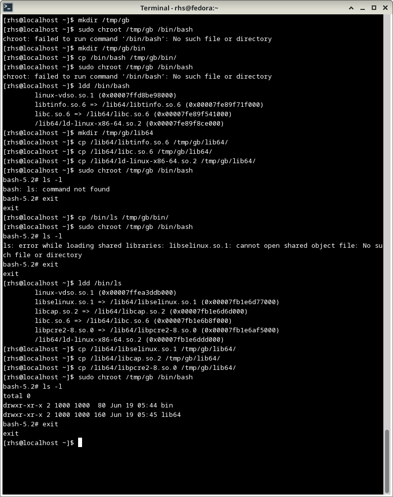
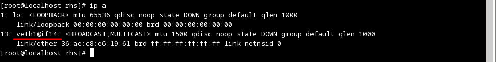
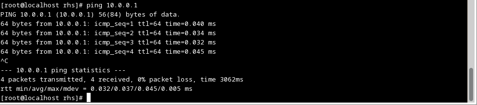

Сделать chroot для /bin/bash и перенести в новый корень программу
ls.
root`chroot' с указанием этого каталога как новый root и пытаемся запустить в
нём
шелл bash`/bin/bash' в нашем новом root отсутствует`/bin' в нашем новом root`/bin/bash' из основной системы`chroot' и пытаемся запустить в нём шелл bash`/bin/bash' в нашем новом root не
хватает библиотек`ldd' определяем какие конкретно библиотеки требуются для запуска
`/bin/bash'
root`chroot' и пытаемся запустить в нём шелл bash`ls -l'`ls' в нашем новом root отсутствует`/bin' программу `/bin/ls' из основной системы`chroot'`ls -l'`ls' не хватает библиотек`ldd' определяем какие конкретно библиотеки требуются для запуска `/bin/ls'
`chroot'`ls -l'Скриншот с вышеописанными операциями:
Повторить последовательность команд с `ip' как на семинаре.
Смотрим какие ip интерфейсы у нас имеются выполнив команду `ip a':
При помощи команды `ip netns list' смотрим какие у нас есть неймспейсы, видим что
никаких, при помощи команды `ip netns add' создаём неймспейс с именем
testns123 и ещё раз выполняем `ip netns list',
видим что неймспейс testns123 появился:
Запускаем в этом нейспейсе шелл bash выполнив
`ip netns exec testns123 bash'
При помощи `ip a' видим что кроме интерфейса loopback у нас ничего нет:
Теперь в основной системе добавляем виртуальную сетевую карту с именем veth0 и сразу же тунелируем
её на вторую виртуальную карту с именем veth1
При помощи команды `ip a' убеждаемся что обе виртуальные сетевые карты появились со статусом
DOWN и слинкованы друг с другом:
Опять находясь в основной системе производим перенос виртуальной сетевой карты veth1 в наш
контейнер testns123 при помощи команды
`ip link set veth1 netns test123'
и при помощи команды `ip a' убеждаемся что виртуальная сетевая карта veth1 из
основной системы исчезла:
Зато она появилась в контейнере:
Теперь в основной системе присваиваем виртуальной сетевой карте veth0 адрес 10.0.0.1 и делаем её
активной (статус у данной карты получается не UP сразу, а пока что LOWERLAYERDOWN потому что та карта, с которой
она слинкована, veth1 в контейнере, пока ещё находится в статусе DOWN, как только veth1
в контейнере будет переведена в UP тут тоже статус станет UP):
А в контейнере присваиваем виртуальной сетевой карте veth1 адрес 10.0.0.2 и тоже делаем её
активной:
Теперь у нас основная система и контейнер связаны по сети, команда `ping' проходит как из основной
системы до контейнера:
Так и в обратную сторону, от контейнера до основной системы:
Повторить последовательность команд с `unshare' как на семинаре.
В верхнем окне терминала на скриншотах это обычный терминал, в нижнем окне терминал на котором выполнена
команда `sudo unshare --pid --net --fork --mount-proc /bin/bash'
Как мы видим произошло ограничение по сети, что видно из вывода команды `ip a':
и по списку процессов, что видно из вывода команды `top':
Всё, домашнее задание по семинару №1 сделано.